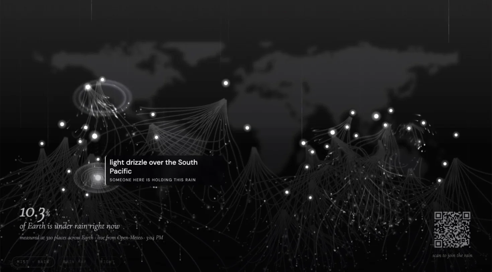
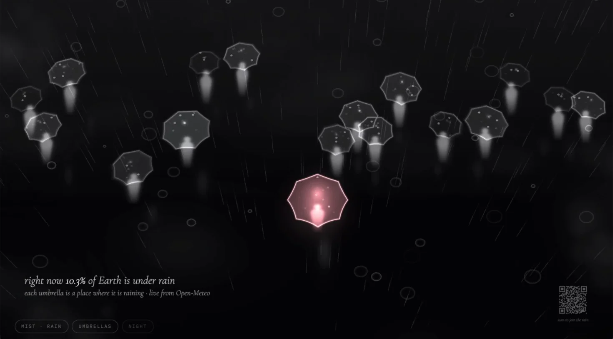
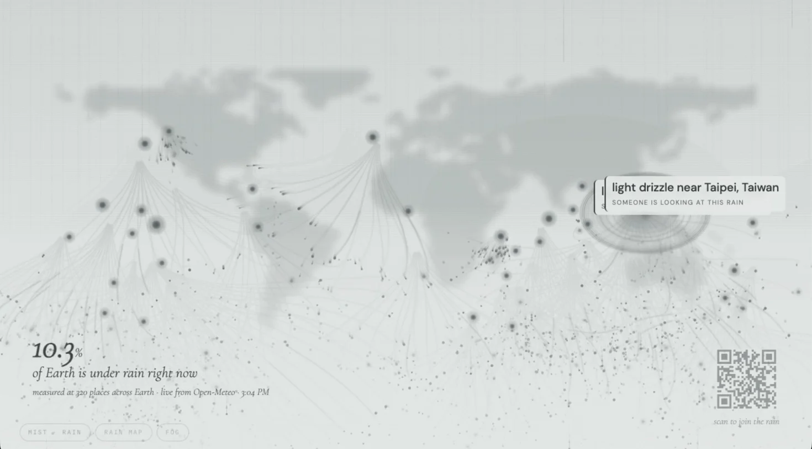

Archive · Data art installation · 2026
Connect the Rain
Live rain from around the world, shared between one wall and every phone in the room.
Data
Live weather at 320 evenly spaced points on Earth, from Open-Meteo, checked every 30 minutes. When this was recorded, 10.3% of them were under rain.
Experience
A shared wall shows where it is raining right now. Each phone that joins becomes one more drop: taps, tilts and breath appear on the wall for everyone.
Weather
A pot of mist beside the wall, watched by a webcam, sets the weather: clear, rain or storm.
02 Walkthrough
One phone, the wall and the mist, in sync.
The phone recording and the wall recording play side by side, lined up to the same moment. The pot of mist cuts in each time the wall’s weather changes.
03 Live
The wall, running right here.
This is the real wall, loaded from its live site into a room made for this visit. Click it once to start the sound, then scan the code with your phone. What you tap shows up here.
Join
Scan to join the rain. Your phone opens the piece in this room.
Wall keys
Click the wall once, then press S for fog or night and Z for the rain map or the umbrellas. The buttons at its bottom left do the same.
On your phone
Tap for a ripple and your note. Drag and the rain bends around your finger. Tilt and the rain leans that way.
Blow
Tap ≋ and allow the microphone, then blow into the phone. A wind rises on the wall, and a storm if you keep going.
Umbrellas
When the wall shows the plaza, one finger carries your umbrella, holding still makes rain fall there, and two fingers send a gust across.
04 The phone
Your phone is one more drop.
Visitors scan a code on the wall and catch the rain. Each phone gets its own colour and its own instrument, and every note fits a slow chord progression shared by the whole room.
05 The wall
A live map everyone shares.
There is one wall. It draws a plume for every place where it is raining, sized by how hard, and it points to the place a phone has just touched.



06 The mist
A pot of mist sets the weather.
A mist maker sits in a pot beside the wall. A webcam films it into TouchDesigner, which reads how much the mist is moving and tells the wall. Phones are not affected: the weather belongs to the room.
- 01
Still mist
Steady rain.
- 02
Stirred mist
Blow on it or wave through it: wind, leaning rain, lightning and thunder.
07 How it works
How the parts talk to each other.
- 01
Live data
A point counts as raining when Open-Meteo reports rain, drizzle, showers or a thunderstorm there, or at least 0.1 mm of precipitation that is not snow.
- 02
Sync
A public MQTT relay carries tap and swipe positions between the phones and the wall. Nothing personal is sent.
- 03
Sound
Eight instruments on one shared clock. Phones play softer as more people join, so the touches blend.
- 04
Mist
The detector finds the opening of the pot, ignores the mist maker’s colour-changing light and any hand in view, and compares the mist’s movement with its quiet level.
The code is on GitHub.